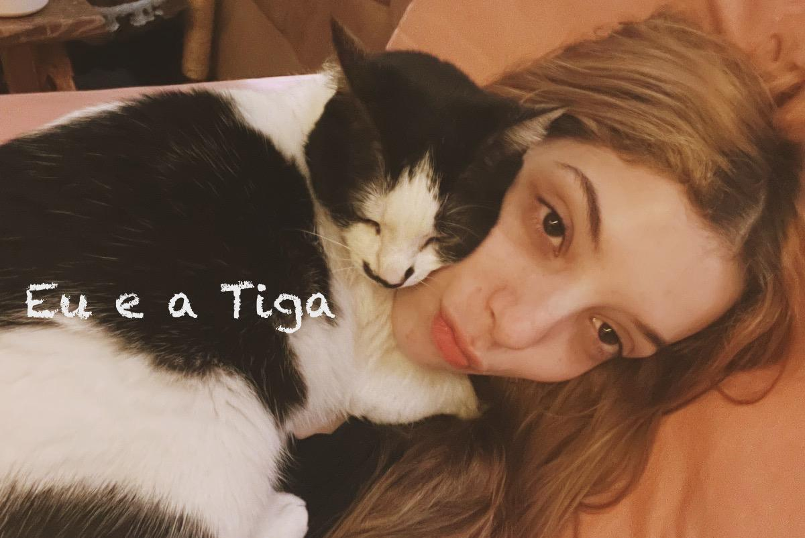
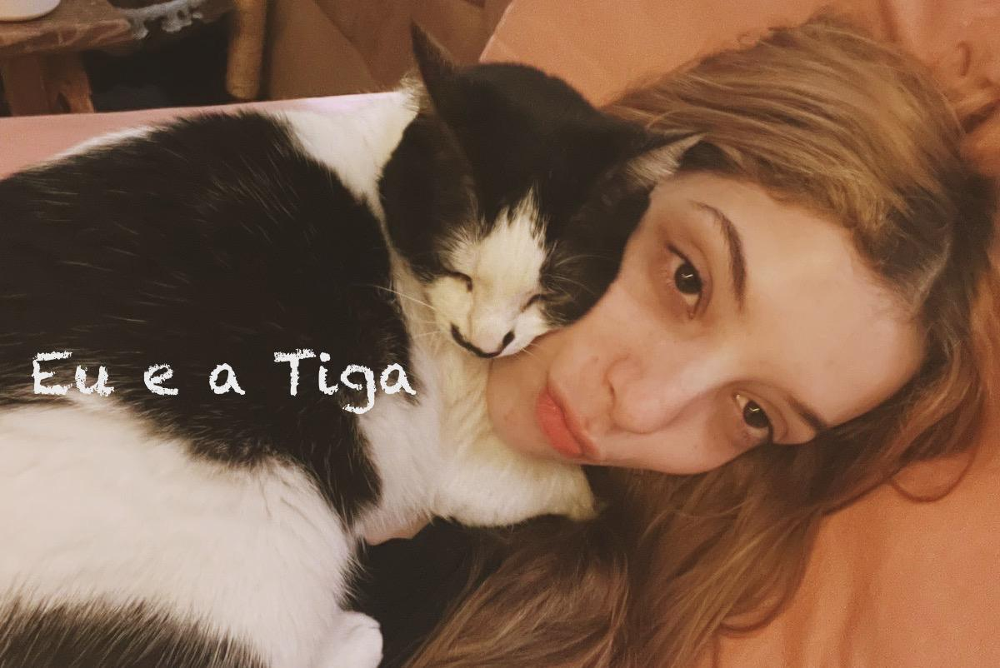

Minha história começa lá na infância onde eu tive meu primeiro gatinho aos dois anos, bom mas eu era muito bebê para lembrar a sensação de ter um gatinho e nem lembro o nome dele, mas então vamos pular para os 5 anos, aos 5 anos meu avô tinha uma gatinha e essa gatinha deu cria e eu vendo isso, já logo me despertou a vontade de ter um lembro como se fosse hoje a sensação de pegar ele, com isso o "Titinho" entrou na minha vida, não sei por que eu quis escolher esse nome e nem da onde eu tirei, mas a minha mãe deixou eu chamar ele como eu quisesse e naquele momento da minha vida me fez muito bem, pois como meus outros avós tinham mudado para o interior de São Paulo isso fez esquecer um pouco daquele momento triste.
.jpeg) 

A história não para por ai, pois depois do Tinho eu tive mais 3 gatos, em 2014 entrou a Tiga e Tigo na minha vida, o Tigo entrou em feveiro e a Tiga em agosto, eu e meus pais foi pegando um amor tão grande por pegar gatos e com toda certeza 2014 foi um dos melhores anos da minha vida por conta disso.

E por fim em 2018 a Cristal entrou na minha vida, meu pai a resgatou de frente a empresa dele e trouxe para casa. Agora essa é a parte triste em 2020 na pandemia, o Tigo veio a falecer devido a problemas renais e uma parada cardiaca, e depois de quatros em 2024 o Tinho veio a falecer também devido a problemas renais. Depois de tudo isso ter acontecido entendi que não tinha conhecimento o suficiente sobre gatos e percebia que muitas pessoas não tinham também, dai que vem a ideia de criar um site que da dicas de bem-estar para que assim mais pessoas possam ser informadas e para que seus gatinhos tenham melhor qualidade de vida além também explicar o comportamento dos gatos e tirar a ideia de que eles são terriveis como muitos acham e buscar a incentivar a adoção.